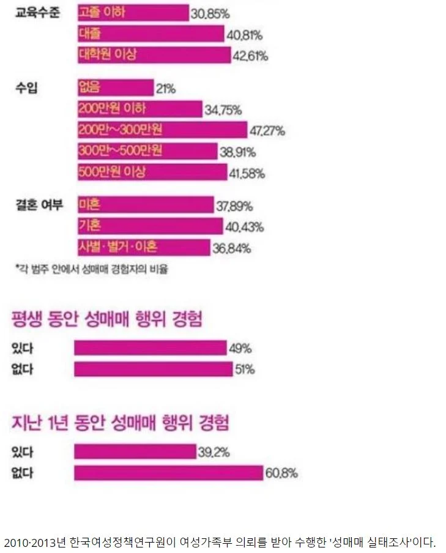
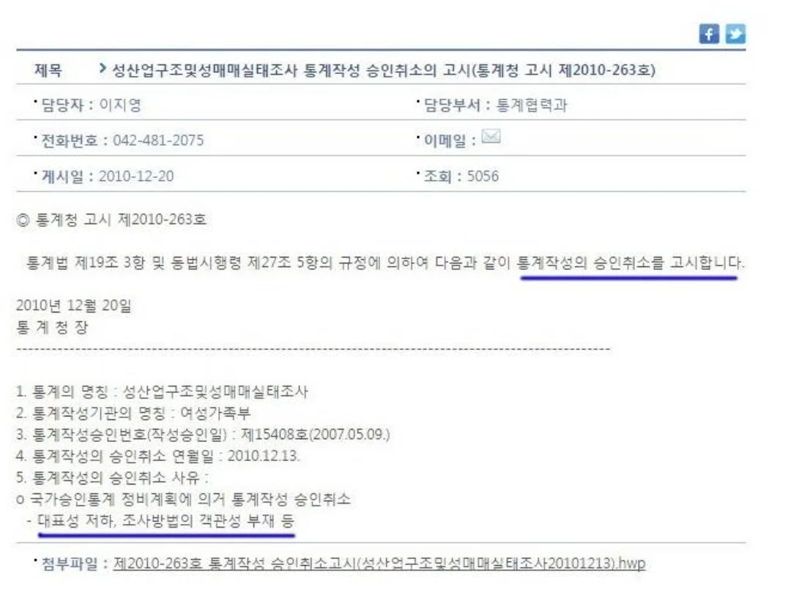
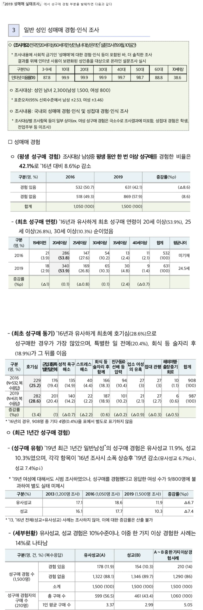
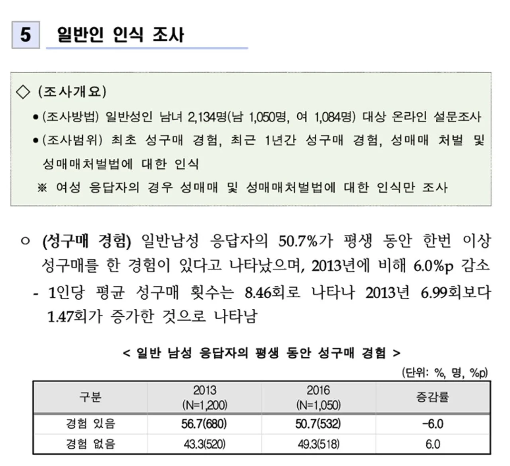
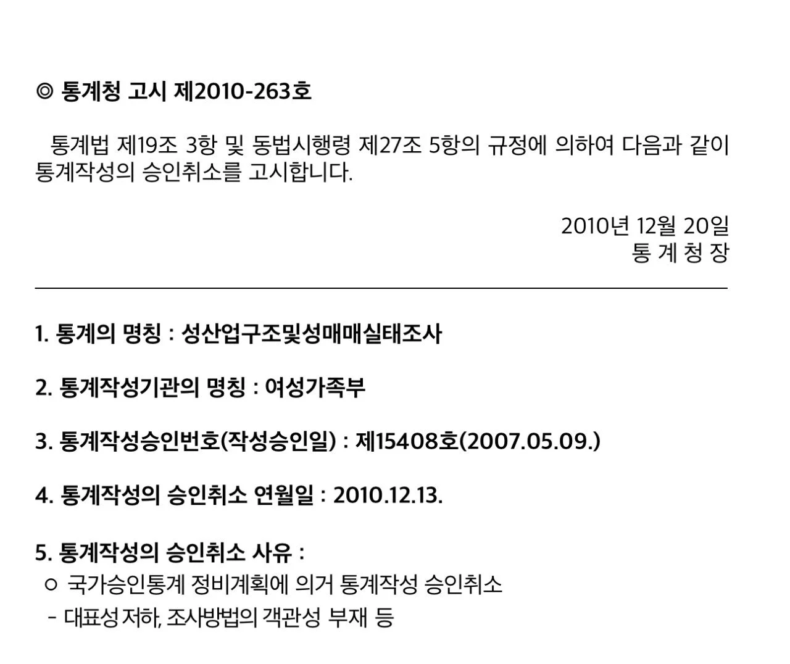
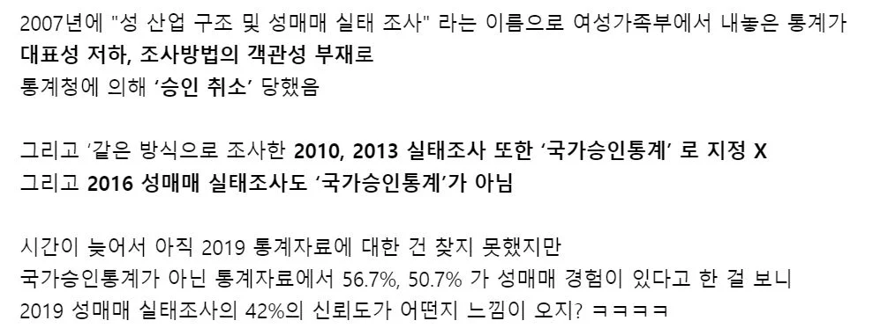
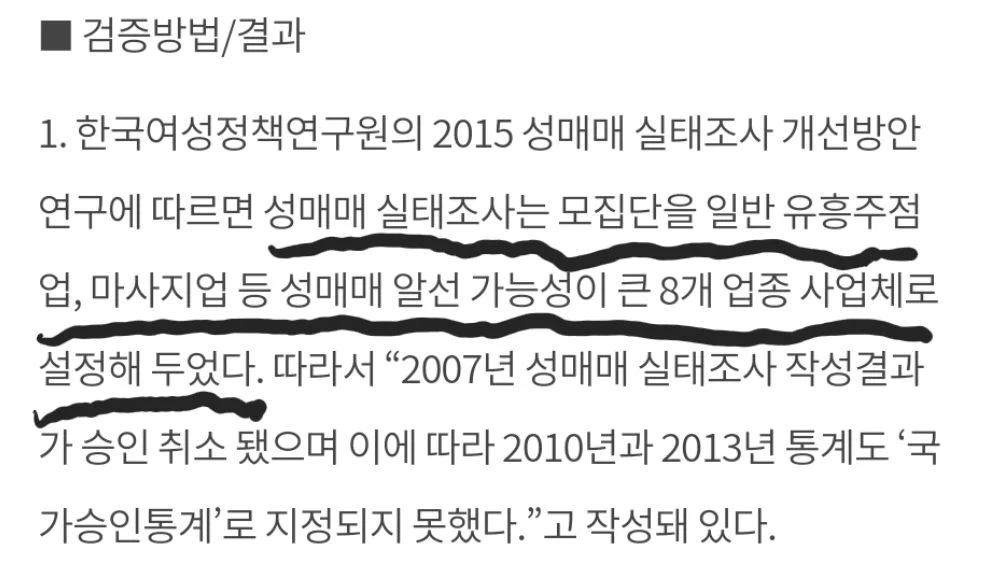

모집단 조작해서 입맛대로 통계 만들었음 ㅋㅋㅋㅋㅋㅋㅋㅋㅋㅋ







모집단 조작해서 입맛대로 통계 만들었음 ㅋㅋㅋㅋㅋㅋㅋㅋㅋㅋ
그래야 존속이가능한 집단아님?
한남들이 정상인이면 필요없잖으
나라 자체가 거대한 창녀촌이라는 통계를 일부러 만들고싶은 이유가 뭔데? 이해가 안되네
저런걸또 빨아주는놈이있다는게 ㅋㅋㅋㅋ
국가기관이 이렇게 국민 적대적인데
국민이 정보좀 팔아먹을수도 있지 ㅋㅋ
애국심 싸악 말아먹음
???: 의도가 좋으니까 시정하지 않겠다
저기서 내가 조사하면, 한국여성을 100% 창녀로 만드는 표본조사 자신있다
저정도면 합법화 해서 세금거두자
저번에 또 여가부 자료 올라왔을 때 지들 입맛에 맞다고 옹호하는 놈들 보이던데 계속 믿는 놈들이 있으니까 조작질을 하지
근데 만약 저렇게 성매수자가 많다는 프레임이 잡히면, 한국 여자들은 성노동자가 많다는 소리밖에 더됨?
한명이 여러명 상대한다
외국인 성노동자가 있다로 회피 가능할듯?
그래서 최근 조작 통계에선 성매매 경험 상대방이 외국인이라고 한국 여자는 클린하다는 식으로 병신같은 통계 냈음
조사 자체는 할 수 있다 치는데
아니 뭔 써먹을 수 없는걸 만들어놨네
남자1500 여자800 이라는 애매한 비율에
남녀 구분도 없어
저러면 여자800명이 성판매평균값 올리는 자료도 만들 수 있을것 아냐
저런걸 당당히 들고오면 대가리부터 깨야하는데
오냐오냐하니까 이지경까지옴
횟집 같은데서 저녁 7시 이후 설문조사 하면서
최근 한달간 술 안마셨다 5% = 국민 95% 술 마심 수준 아니냐
잘 써먹었잔아 ㅋ
세상이 얼마나 우스으면 나랏일하면서 거짓말이나 만들고있는거냐
여가부 = 전염병이나 옮기는 기생충
빨리 수도권에서 꺼지라고~
국가 공무원은 전제 노동자중 몇%일까' 통계를 내야하는데
시청가서 공무원이세요? 이지랄한건가
쟤들은 근데 주작해도 처벌같은것도 안받으니 그냥 계속주작하고 한남들 계속 성범죄자만들듯ㅋㅋ